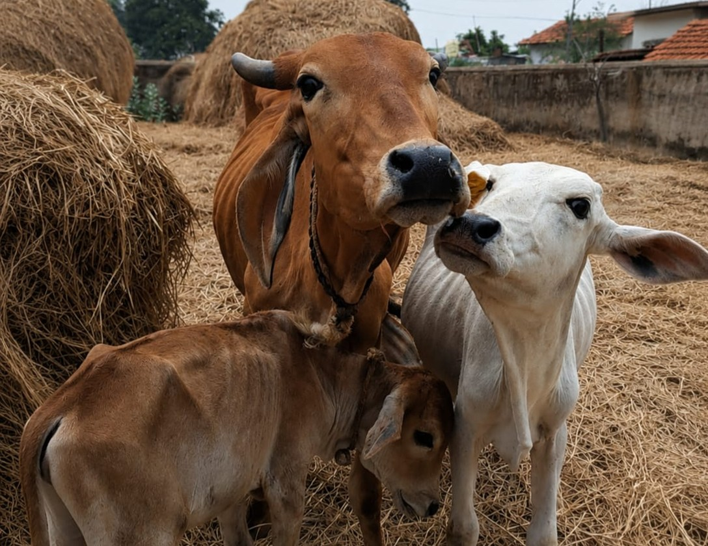
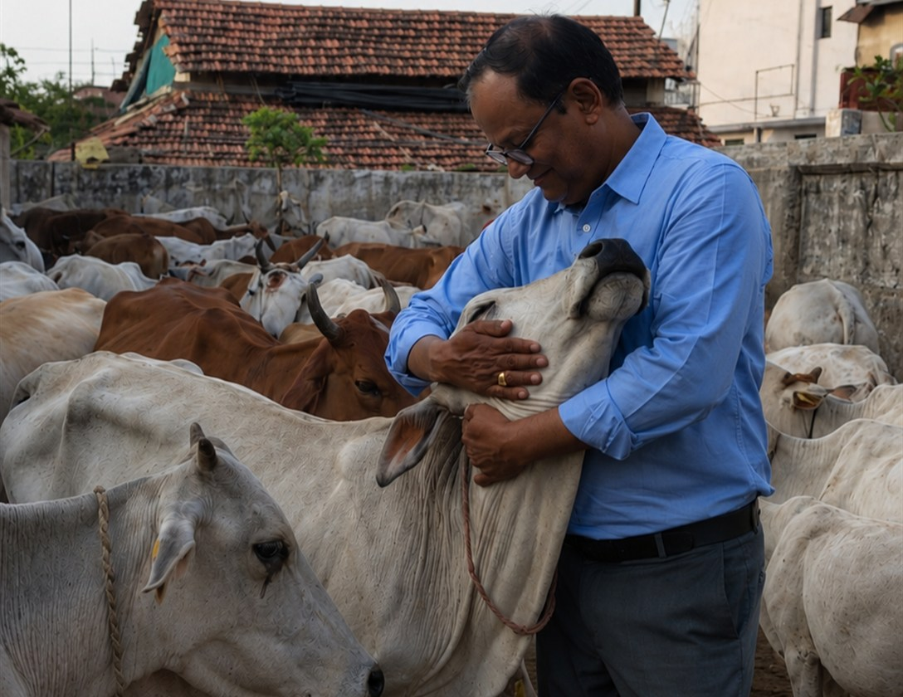
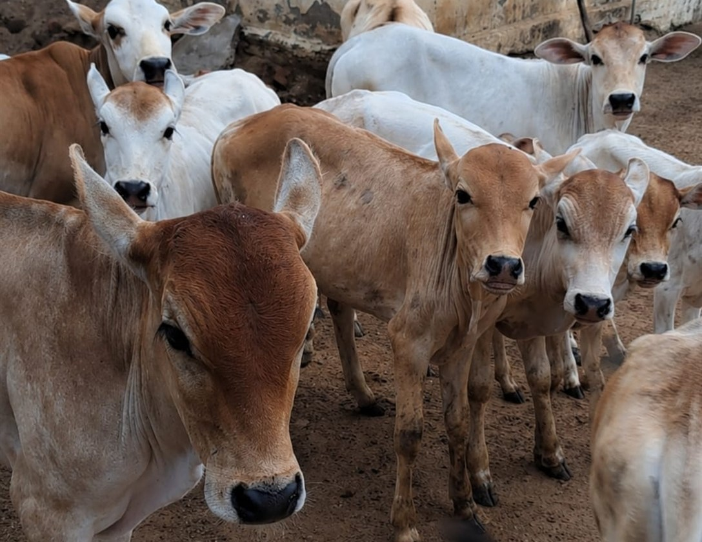
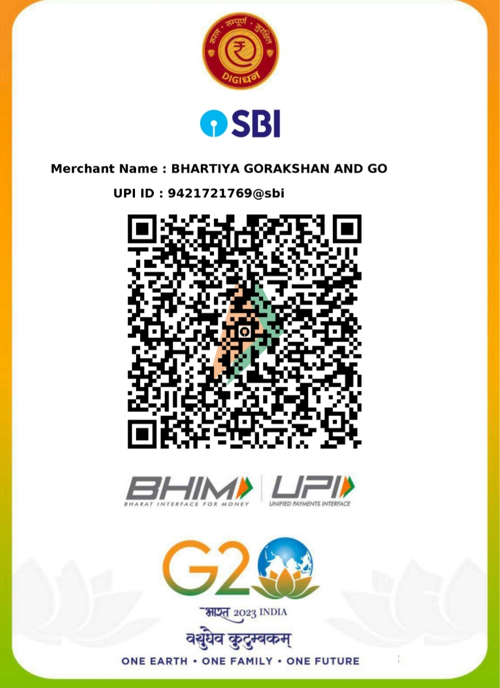
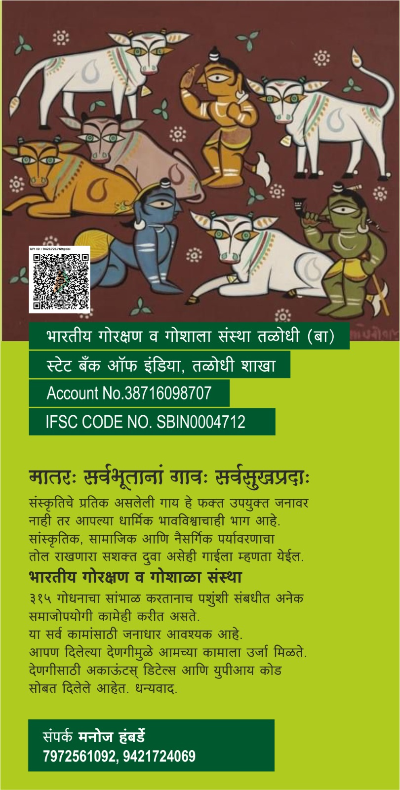
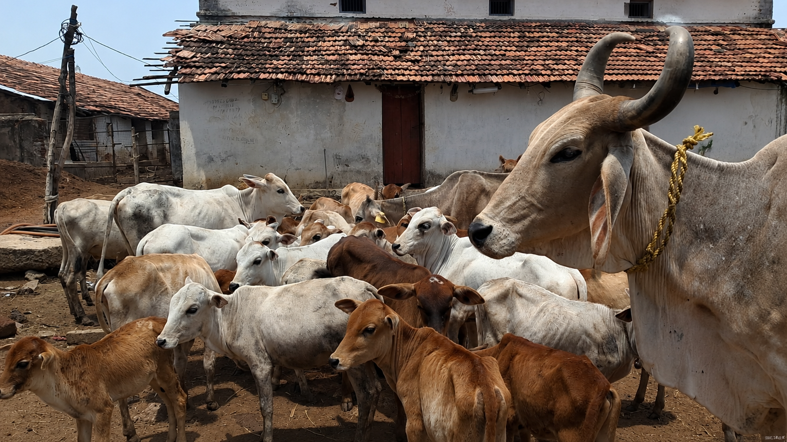
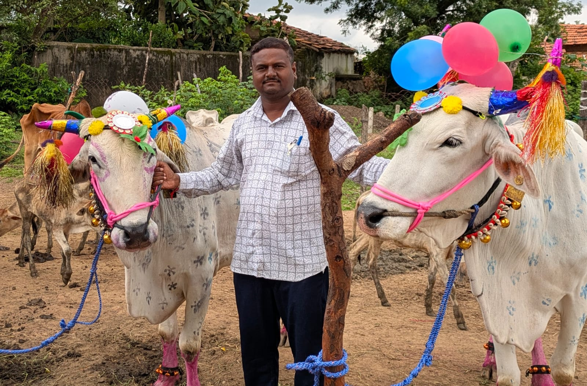

LifeTime Home
We take care of abandoned, injured and slaughterhouse-rescued cows, bulls, and calves; by providing nutritious food, clean water, medical attention, and lifetime accommodation.

A Unique Concept of Gausadan
A retirement home and shelter for cows saved from slaughter, accidents and from abandonment
Please DonateUnique features of
We take care of abandoned, injured and slaughterhouse-rescued cows, bulls, and calves; by providing nutritious food, clean water, medical attention, and lifetime accommodation.

Serving cows without profit in mind is our vision. We strictly make sure that milk is for calves. We do not breed cows and give preference to rescuing cows.

All the trustees, governing members and management is run only by volunteers who have their full time jobs. There is zero administrative cost.

Scan and Donate
Use the UPI scanner or bank details below to support food, medicine, rescue work, shelter, and daily care for cows.


Cows are mothers of the universe.

We sustain purely on donations. Please help us by donating to feed the cows and to meet our medical expenses.
Read More
We welcome families, students, and devotees to visit our gaushala. Spend meaningful time with our cows, offer fodder, participate in Gau Seva, and experience the joy of giving love and care to these gentle animals.
AddressFacts about us
We produce 100% natural, chemical-free fertilizer using fresh cow dung collected from our gaushala. The dung is carefully dried, processed, and enriched using traditional organic methods to create high-quality manure. This eco-friendly fertilizer improves soil fertility, promotes healthy plant growth, retains moisture, and reduces the need for harmful chemical fertilizers, making it an excellent choice for sustainable farming.
Our skilled artisans transform cow dung into beautiful, eco-friendly handicrafts that are both useful and decorative. We create items such as pen stands, Lord Ganpati idols, diyas, wall decor, and other handcrafted products using natural materials. Every piece is biodegradable, environmentally friendly, and promotes the message of sustainable living while supporting traditional craftsmanship.
Our team works tirelessly, day and night, to rescue abandoned and distressed cows before they reach slaughterhouses. Often risking their own safety, our volunteers respond to emergency calls, transport rescued animals to our gaushala, and provide them with food, shelter, medical treatment, and lifelong care. Every rescue is a step toward giving these innocent animals a safe, dignified, and compassionate life.
Bhartiya Gorakshan And Gaushala Sanstha
CMR8+P2H, Talodhi, Maharashtra - 441221, India
Email : bharatiyagorakshanandgaushala@gmail.com
Phone / WhatsApp : 9421724069 / 9421880226
{kind=link}